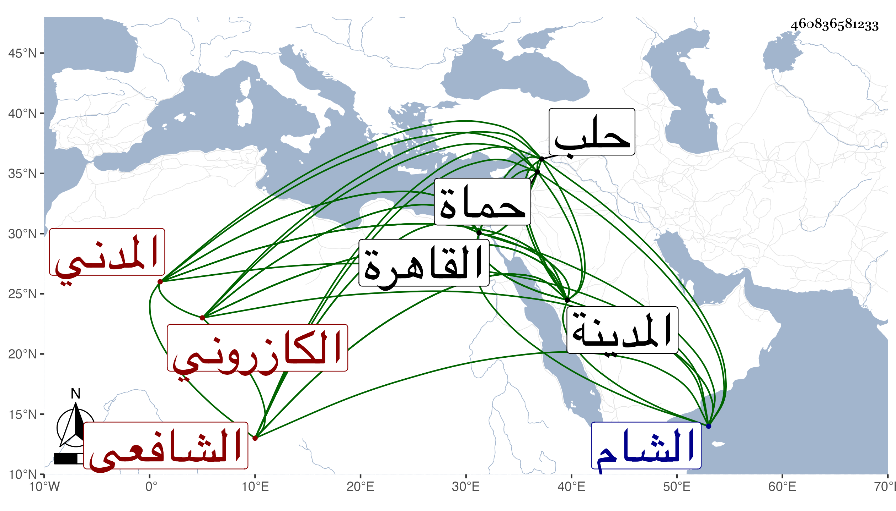

0902Sakhawi.DawLamic.ITO20230111-ara1.EIS1600.460836581233
Biography ID: 460836581233
485
أحمد بن محمد بن محمد بن أحمد بن محمد بن روزبة الشهاب أبو العباس بن الناصر أبي الفرح بن الجمال الكازروني المدني الشافعي . ولد في ليلة رابع صفر سنة سبع وعشرين وثمانمائة بالمدينة ونشأ بها فحفظ القرآن والمنهاجين الفرعي والأصلي والشاطبية وألفية ابن مالك وعرض في سنة اثنتين وأربعين فما بعدها ببلده وبالقاهرة والشام وحلب وحماة على خلق منهم أبو الفتح المراغي والمحب المطري وشيخنا والمقريزي والبرهان الباعوني والصدر بن هبة الله بن البارزي ، وسمع بالقاهرة على الزين الزركشي وبالمدينة على جده وأخذ المنهاج الأصلي بحثا عن أبي السعادات ابن ظهيرة حين كان بالمدينة ، وكان أصيلا . مات فيها شهيدا نفخ عليه ثعبان في رجله وهو بالفقير حديقة من العوالي فحمل إلى بيته فأقام أكثر من شهر وقضى . وذلك سنة ثلاث وستين رحمه الله .
